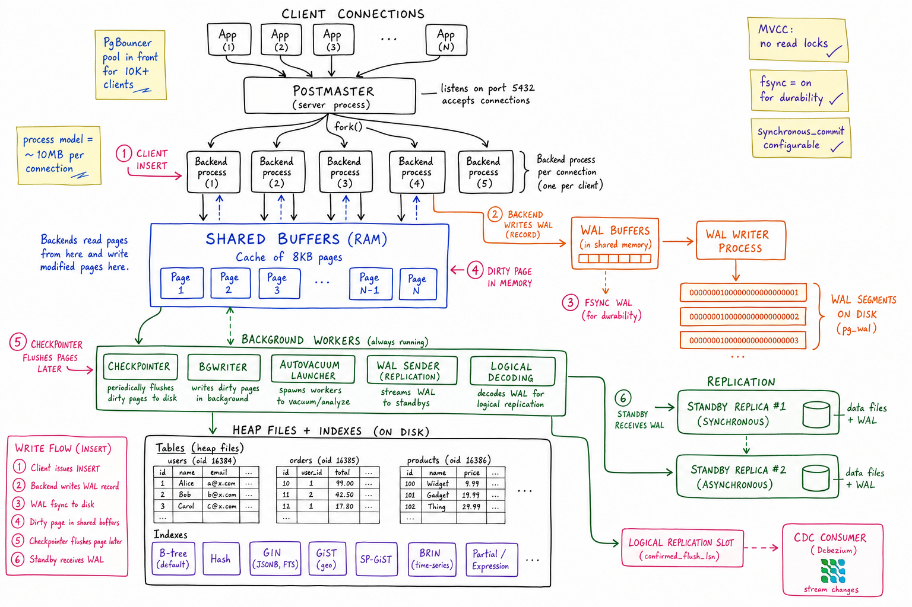
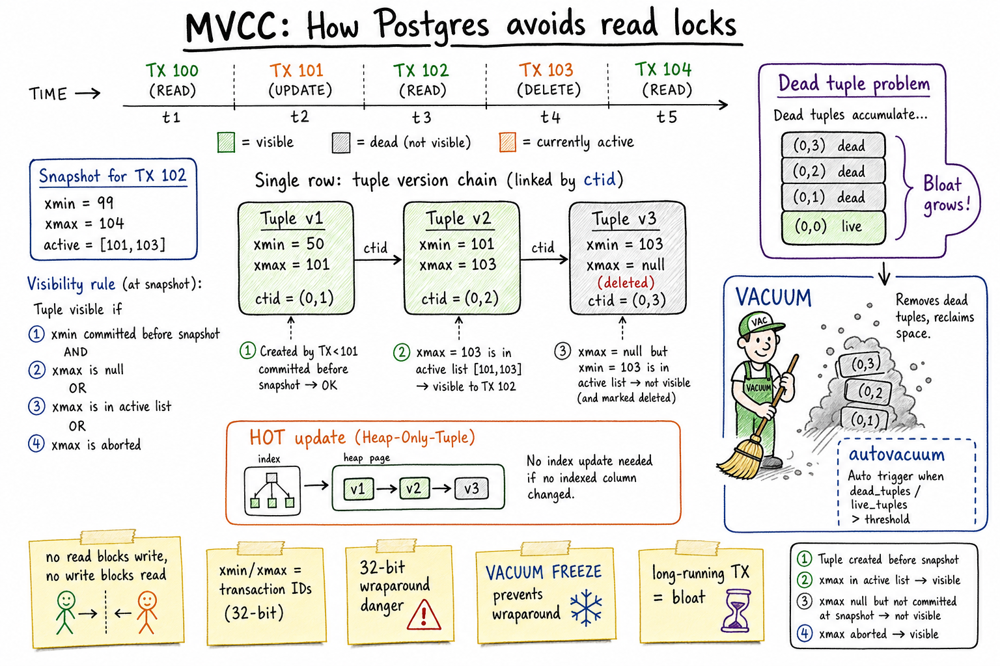

PostgreSQL // Deep Dive
Rock-solid open-source ACID relational database with JSONB, GIN, BRIN, logical replication, and a query planner that punches above its weight. The default “real database” for most stacks.

Whiteboard architecture: postmaster forks a backend process per connection; backends read/write 8KB pages in shared buffers and append WAL records that the WAL writer fsyncs. Checkpointer, bgwriter, autovacuum, WAL sender and logical-decoding workers run in the background. On disk: heap files + a rich index family (B-tree, Hash, GIN, GiST, SP-GiST, BRIN, partial/expression). Replicas stream WAL synchronously or asynchronously; logical replication slots feed CDC.
01 — Identity
Postgres is the boring-correct relational database that became the default. It gives you full SQL, true ACID, MVCC without read locks, transactional DDL, every isolation level up to SERIALIZABLE, an extensible type system (JSONB, arrays, ranges, geometry, vectors via pgvector), and a query planner that handles complex joins, window functions, and CTEs gracefully. It scales vertically well into the millions-of-row range and horizontally via read replicas, partitioning, and logical replication.
In a stack, Postgres is the system of record — user accounts, orders, payments, the things you can't lose. Cache and queue layers sit in front; warehouses and search/vector indexes hang off CDC streams behind.
Reach for Postgres when you need transactions, foreign keys, joins, and the ability to evolve a schema. Reach past it only when one of those isn't needed or scale forces you elsewhere.
01a — Core Concepts
| Term | Definition | Notes |
|---|---|---|
| Tuple | A row version on disk. | UPDATEs create new tuples; old ones become dead. |
| Page | 8 KB on-disk block holding multiple tuples. | I/O unit; lives in shared buffers when hot. |
| MVCC | Multi-Version Concurrency Control. | Readers see a snapshot; never block writers, and vice-versa. |
| xmin / xmax | Transaction IDs stamped on each tuple (creator / deleter). | Visibility check uses snapshot vs xmin/xmax. |
| Snapshot | The set of TX IDs visible to a transaction. | Repeatable Read freezes it; Read Committed re-acquires per statement. |
| VACUUM | Background reclaim of dead tuples. | Autovacuum runs automatically; you tune thresholds. |
| WAL | Write-Ahead Log; every change written before the data page. | Source of crash recovery and replication. |
| Checkpoint | Flush all dirty pages to disk and record WAL position. | Bounds recovery time; expensive when frequent. |
| Isolation level | Read Committed (default), Repeatable Read, Serializable (SSI). | Postgres skips Read Uncommitted entirely. |
| HOT update | Heap-Only Tuple update — no index entry, points to new version in same page. | Possible only when no indexed column changed. |
| TOAST | Out-of-line storage for large field values. | JSONB blobs, big text; transparent. |
| Replication slot | Server-side record of how far a replica has read. | Prevents WAL recycling before replica catches up. |
01b — API / Wire Surface
SQL + procedural
-- Standard SQL + Postgres extensions
SELECT id, total FROM orders
WHERE created_at > now() - interval '1 day'
ORDER BY total DESC LIMIT 100;
-- JSONB path access & partial update
SELECT data->'address'->>'city' FROM users WHERE id = $1;
UPDATE users SET data = jsonb_set(data, '{prefs,theme}', '"dark"') WHERE id = $1;
-- Upsert (idempotent insert)
INSERT INTO accounts (id, balance) VALUES ($1, $2)
ON CONFLICT (id) DO UPDATE SET balance = EXCLUDED.balance;
-- Row-level lock with skip
SELECT * FROM jobs WHERE state='SCHEDULED' AND next_run_at <= now()
FOR UPDATE SKIP LOCKED LIMIT 100;
-- Prepared statement
PREPARE q AS SELECT * FROM users WHERE id = $1;
EXECUTE q(42);
-- LISTEN/NOTIFY (pub/sub within Postgres)
LISTEN order_events;
NOTIFY order_events, '{"order_id":42}';
-- Advisory lock (app-defined mutex stored in PG)
SELECT pg_advisory_xact_lock(hashtext('billing-run'));
-- Bulk load
COPY orders FROM '/tmp/orders.csv' WITH (FORMAT csv, HEADER true);
Wire protocol & clients
Postgres speaks its own frontend/backend protocol on TCP 5432. Every driver (libpq, JDBC, psycopg, pgx) wraps it. Prepared statements give plan reuse; the extended protocol supports parameter binding without SQL string interpolation (safer + faster).
The two most underused features in interview answers:FOR UPDATE SKIP LOCKED(Postgres makes lightweight job queues trivial without Redis) andLISTEN/NOTIFY(in-process pub/sub good enough for many invalidation cases).
02 — When To Use / When NOT
| Use Postgres when… | Avoid when… |
|---|---|
| You need real ACID transactions and FK constraints | You truly need horizontal write scale beyond 10s of thousands TPS |
| Schema is structured but might evolve — JSONB for the messy bits | Append-only event log at millions/sec — use Kafka |
| Complex queries: joins, window functions, CTEs, materialised views | Sub-ms point lookups at huge scale — use Redis or DynamoDB |
| OLTP + a little analytics on the same DB (with replicas) | Wide-column with billions of rows per key — use Cassandra |
| You want logical replication / CDC for downstream pipelines | Geographically multi-master strong consistency — use Spanner/Cockroach |
| You want a lightweight queue (SKIP LOCKED) without adding Kafka | Many tiny tables across many tenants — per-tenant DBs blow up connections |
03 — Architecture (Internals)
Client ──► postmaster ──fork──► Backend process (one per connection)
│
│ reads/writes
▼
┌─────────────────────┐
│ Shared Buffers │ (8KB pages, configurable)
└─────────────────────┘
│
│ writes WAL records first
▼
┌─────────────────────┐
│ WAL Buffers │ ─► WAL Writer ─► pg_wal/*
└─────────────────────┘
│ │
Background workers: ──── Checkpointer ─── Bgwriter ─── Autovacuum ─── WAL Sender
│
▼
Heap files + Indexes (on disk)
Process-per-connection model
Postgres forks a backend process for each connection. That backend is your entire compute path: parser, planner, executor, buffer access, WAL write. Pro: total memory isolation. Con: each process costs ~5–10 MB resident plus shared-buffer access, so 5,000 connections is already pain. This is why PgBouncer exists.
Background workers
- Checkpointer — flushes all dirty pages to disk periodically; bounds recovery time.
- Bgwriter — trickles dirty pages out so backends don't stall.
- Autovacuum launcher — spawns workers to reclaim dead tuples.
- WAL writer / WAL sender — persists WAL and streams it to replicas.
- Logical decoding — turns WAL into a stream of row-level changes for CDC.

Zoom-in: MVCC stamps every tuple with xmin (creator TX) and xmax (deleter TX). UPDATEs don't overwrite — they insert a new tuple version and mark the old one's xmax. Each transaction reads with a snapshot that decides visibility. Dead tuples accumulate as bloat; VACUUM (and autovacuum) reclaim them. HOT updates avoid index churn when no indexed column changed.
04 — MVCC: How It Really Works
Postgres never overwrites a row in place. Every UPDATE is logically “insert new tuple + mark old tuple deleted”, and every DELETE is “mark deleted”. Each tuple carries:
xmin— the transaction ID that created itxmax— the transaction ID that deleted/updated it (or NULL)- A
ctidpointer to the next version (used by HOT)
A transaction's snapshot stores: the highest committed xid (xmax of snapshot), the lowest still-running xid (xmin), and the list of in-progress xids. Visibility for a tuple:
- Tuple's
xminmust be committed before the snapshot AND not in its active list. - Tuple's
xmaxmust be NULL, in the active list, or aborted.
What you get for free
- Readers never block writers; writers never block readers. There are no shared read locks on rows.
- Long-running reports run alongside heavy OLTP without freezing it.
- Repeatable Read just keeps the same snapshot for the whole transaction.
- SERIALIZABLE (SSI) layers conflict detection on top, aborting transactions that would produce a non-serialisable schedule.
What you pay for
- Bloat — dead tuples linger until VACUUM cleans them.
- Long-running transactions hold back VACUUM — a 3-hour analytical query keeps the xmin horizon back, so dead tuples from other writes can't be reclaimed.
- xid wraparound — xids are 32-bit; reach 2³¹ without freezing tuples and the system halts to prevent data loss.
VACUUM FREEZEis what keeps this from happening.
05 — VACUUM, Autovacuum, and Bloat
VACUUM does three jobs: (1) reclaim space from dead tuples for reuse, (2) update visibility map so index-only scans work, (3) FREEZE old tuples (set a special xid) to avoid wraparound.
| Variant | What |
|---|---|
VACUUM | Concurrent reclaim; space marked reusable but file size doesn't shrink. |
VACUUM FULL | Rewrites the table from scratch — takes an exclusive lock. Avoid in prod. |
ANALYZE | Refreshes planner statistics; usually piggybacks on autovacuum. |
VACUUM FREEZE | Aggressively freezes tuples to prevent xid wraparound. |
Autovacuum triggers
By default, autovacuum kicks in on a table when dead_tuples > autovacuum_vacuum_threshold + autovacuum_vacuum_scale_factor × n_live_tuples (default 20%). For hot tables, lower the scale factor (e.g. 1%) so it runs more often with smaller batches.
Bloat — the operational tax
- Symptoms: tables grow without row count growing; index seeks slower than expected;
pg_stat_user_tables.n_dead_tupclimbs. - Causes: high update rate, long-running transactions blocking VACUUM,
vacuum_cost_limittoo low for table size. - Fixes: tune per-table autovacuum, kill long transactions, use
pg_repackfor online rewrite, design schemas for HOT updates (don't change indexed columns).
06 — WAL & Durability Tuning
Postgres uses Write-Ahead Logging: every change to a data page is first written as a WAL record. On crash, recovery replays WAL from the last checkpoint. WAL is what makes the database durable, and it's also the wire format for replication.
The durability knobs
| Setting | Effect |
|---|---|
fsync = on | Always fsync WAL on commit. Off = fast, can lose committed data on power loss. Off is for benchmarks only. |
synchronous_commit = on/off/remote_write/remote_apply | Default on = wait for local WAL flush. off = batched fsync (risk a few hundred ms of lost commits). remote_apply = wait for replica to apply too (highest safety, highest latency). |
wal_writer_delay | Trickle interval for the WAL writer. |
checkpoint_timeout / max_wal_size | How often checkpoints happen. Larger = better steady-state perf, longer crash recovery. |
full_page_writes | After a checkpoint, the first change to a page writes the whole page to WAL (torn-page protection). Off only with reliable atomic disk writes. |
For most apps: defaults are correct. For ingest-heavy paths you can ship rows with synchronous_commit=off per transaction (accept < 1s loss window in exchange for huge throughput) without compromising the rest of the database.
07 — Replication: Physical, Logical, CDC
Physical (streaming) replication
The primary streams its WAL byte-for-byte to standbys. The standby applies WAL and is a near-clone (same files, same blocks). Use for HA failover and read scaling.
- Async (default) — primary commits without waiting. Tiny window of data loss on failover.
- Sync (
synchronous_standby_names) — primary waits for at least one named standby to fsync. Zero loss but a stalled standby stalls the primary; pair with quorum standby (ANY 2 (s1,s2,s3)) for safety. - Hot standby — standbys serve read-only queries; useful for reporting and offloading reads.
- Replication slots — persistent server-side cursor that keeps WAL until each replica/CDC consumer has caught up. Powerful, also dangerous (a stuck slot fills your disk).
Logical replication / CDC
Logical decoding parses the binary WAL stream into row-level change events (INSERT/UPDATE/DELETE) via an output plugin (pgoutput, wal2json). Built-in logical replication uses this for publication/subscription between Postgres instances. Debezium uses the same mechanism to stream changes into Kafka for analytics, search indexes, cache invalidation.
Limitations to remember: no DDL replication, requires primary keys (or REPLICA IDENTITY FULL), some types (large objects) aren't supported.
08 — The Index Family
| Type | Use | Why |
|---|---|---|
| B-tree (default) | Equality, range, ORDER BY, LIKE 'prefix%' | The workhorse; sorted; supports unique constraints |
| Hash | Equality-only on a single column | Faster than B-tree for pure =; rarely worth the friction |
| GIN (Generalised Inverted) | JSONB containment @>, full-text search, array overlap | Inverted index of values→rows; large but powerful for “contains” queries |
| GiST | Geometry, ranges, fuzzy search (trigram), nearest-neighbour | Generalised search tree; supports custom operators |
| SP-GiST | Non-balanced trees: quadtree, k-d tree, radix trie | Niche; very fast for the right shape (IP prefixes, etc.) |
| BRIN (Block-Range) | Naturally ordered huge tables: time-series, append-only logs | Tiny on disk (one entry per N pages); scans by range |
| Partial | CREATE INDEX ... WHERE state='ACTIVE' | Index only the rows you query — massive size + speed win |
| Expression | CREATE INDEX ON users (lower(email)) | Indexes a computed value; matches the same expression at query time |
| Covering / INCLUDE | Add non-key columns to a B-tree for index-only scans | Avoid heap lookup for narrow projection queries |
Index gotchas
- Index bloat mirrors table bloat —
REINDEX CONCURRENTLYrebuilds without locks. - Indexes cost on writes; every INSERT/UPDATE touches each index that includes a changed column. HOT updates skip index entries when no indexed column changed.
- Postgres won't use an index if the planner thinks > ~5-10% of rows match — sequential scan is cheaper. Use partial indexes for selectivity.
09 — FOR UPDATE SKIP LOCKED: Postgres As A Queue
Postgres has a built-in lightweight job queue that's good enough for many workloads:
BEGIN; SELECT job_id, payload FROM jobs WHERE state = 'SCHEDULED' AND next_run_at <= now() ORDER BY next_run_at FOR UPDATE SKIP LOCKED LIMIT 100; -- ... process the batch ... UPDATE jobs SET state='RUNNING', attempt=attempt+1 WHERE job_id = ANY($1); COMMIT;
FOR UPDATElocks the rows in the SELECT.SKIP LOCKEDtells other concurrent workers to ignore rows that are already locked, so each worker grabs a disjoint batch with no contention.- This is exactly how the Job Scheduler reads its “due now” rows from Postgres before pushing to Kafka.
The pattern handles up to ~10K jobs/sec per shard without breaking a sweat. Beyond that, layer it: Postgres for source-of-truth + scheduling, Kafka as the ready queue.
10 — The Query Planner
Postgres uses a cost-based optimizer. It enumerates equivalent execution plans (seq scan vs index scan, nested loop vs hash join vs merge join, in what order to join), estimates the cost of each using statistics from ANALYZE, and picks the cheapest. Reading the plan is the most useful Postgres skill:
EXPLAIN (ANALYZE, BUFFERS) SELECT u.id, count(*) FROM users u JOIN orders o ON o.user_id = u.id WHERE u.country='US' GROUP BY u.id;
What to look for
- Seq Scan on a big table when you expected an index — missing or unused index; check selectivity, stale stats, or implicit casts hiding the index.
- Estimated vs actual rows wildly different — stats are off; run
ANALYZEor increasedefault_statistics_targetfor that column. - Nested Loop with high outer rows — almost always a join-order or join-type mistake; the planner expected few outer rows.
- Buffers: shared read=... — tells you how much was on disk vs cache. Big read on a frequent query → consider covering index.
11 — Partitioning
Declarative table partitioning (Postgres 10+) splits a logical table into many physical child tables. Useful when one table is becoming unmanageable.
| Strategy | Key | Use |
|---|---|---|
| Range | Date, ID | Time-series: one partition per month; drop old months in O(1) via DETACH PARTITION |
| List | Enum-like column (region, tenant) | Multi-tenant or per-region routing |
| Hash | Hash(column) | Even spread when no natural range |
Wins: query pruning (planner skips partitions outside the WHERE), per-partition VACUUM/index, fast bulk drop. Caveats: foreign keys to partitioned tables have constraints; the planner can't prune through complex predicates; partition count of thousands gets expensive in planning.
12 — The Connection-Count Problem
Each Postgres connection is a real OS process: ~5–10 MB of memory, plus its share of work_mem per query operator. Beyond a few hundred connections per host you start seeing CPU context-switch overhead, scheduler latency, and shared-buffer contention. App servers commonly want thousands of connections.
PgBouncer (or Pgpool) in front
- Session pooling — one client connection ≡ one backend; least benefit, full feature parity.
- Transaction pooling — a backend is checked out only for the duration of a transaction. Multiplexes 10K client conns onto ~100 backends. Cost: no session-level features (prepared statements caching, LISTEN/NOTIFY, advisory locks across transactions).
- Statement pooling — one statement, then released. Rarely used; many features break.
The standard production pattern: thousands of app clients → PgBouncer transaction pool → ~100 Postgres backends. Modern alternatives: PgCat (multi-threaded), Supavisor.
13 — Operational Concerns
Sizing
shared_buffers≈ 25% of RAM (more isn't better; let the OS page cache do work).effective_cache_size≈ 50–75% of RAM (a planner hint, not an allocation).work_memper-operator per-connection — budget for max_connections × work_mem. Big OOMs come from this.max_connections: keep small (200–500). Use PgBouncer for the rest.
Metrics that matter
| Metric | What it tells you |
|---|---|
| n_dead_tup / n_live_tup | Bloat ratio per table |
| pg_stat_replication.lag | Replica fall-behind in bytes/time |
| pg_stat_activity.state='idle in transaction' | Open transactions holding back VACUUM |
| pg_stat_statements | Top queries by total time; the right slow-query log |
| checkpoint_warning, checkpoint frequency | Tune max_wal_size |
| txid_age(datfrozenxid) | Distance to xid wraparound; autovacuum freeze is keeping up? |
Classic failures
- Idle-in-transaction leaks block autovacuum; bloat explodes silently. Set
idle_in_transaction_session_timeout. - Disk full from replication slot — a dropped consumer leaves a slot; WAL keeps accumulating. Monitor
pg_replication_slots.confirmed_flush_lsn. - Connection storm after restart — app servers all reconnect; without a pooler the DB stalls. PgBouncer absorbs it.
- Autovacuum starved on huge table — default cost limit too low. Tune per-table.
- Wraparound emergency —
txid_ageapproaches 2 billion, system halts to single-user mode. AggressiveVACUUM FREEZEon largest tables.
14 — Usage Patterns (Cross-Links)
- Payment system — ACID double-entry ledger lives in Postgres; SERIALIZABLE isolation for fund transfers, FK constraints, audit triggers.
- Job Scheduler — source-of-truth job metadata in Postgres;
(shard, next_run_at)partial index for due-job lookup;FOR UPDATE SKIP LOCKEDfor worker pulls; logical replication feeds the audit trail. - Uber trip-state — trip rows in Postgres for the state machine, JSONB for vehicle details, CDC stream into Kafka for analytics.
- Email service — campaign metadata, suppression lists, idempotency rows.
- Notification system — user preferences, delivery records, per-user idempotency keys.
- Unique ID generator — ranges/sequences allocated atomically from Postgres counters before being handed to ID-gen nodes.
15 — Alternatives
| System | Pick when… | Trade-off vs Postgres |
|---|---|---|
| MySQL / MariaDB | You're already on it; you want logical/binlog replication everywhere; you like its replication ecosystem (Vitess, ProxySQL) | Weaker JSON, weaker planner; storage engines differ in behaviour; in-place updates (no MVCC bloat) but different lock semantics |
| Amazon Aurora (Postgres-compatible) | You want a managed Postgres with storage decoupled from compute and 15-replica scaling | Some operational quirks; cost; vendor lock-in |
| CockroachDB / YugabyteDB | You need geo-distributed strong-consistency Postgres-compatible writes | Higher write latency; SQL dialect differences; expensive joins |
| Google Spanner | You need globally consistent ACID at planet scale | Cost; SQL surface narrower; GCP-only |
| SQLite | Embedded, single-process, no network | Single writer; no real concurrency for OLTP |
| ClickHouse / Snowflake / BigQuery | Analytical workloads — OLAP, columnar, big scans | Not for OLTP; eventual / batched ingestion |
16 — Interview Q&A
How does MVCC actually let readers and writers not block each other?
What is VACUUM for and what happens if it falls behind?
How does the WAL guarantee durability?
synchronous_commit=on). If the server crashes before dirty pages are flushed, recovery replays WAL from the last checkpoint and reconstructs the in-memory state. The data pages themselves don't need to be on disk at commit time — only the WAL up to that LSN.When would you use SERIALIZABLE vs Repeatable Read?
could not serialize access errors that you must retry.Postgres connection limit is hurting us. What do you do?
SET, advisory locks across transactions all break in transaction mode — redesign or pin sessions for those.How do you do CDC out of Postgres?
wal_level=logical), create a publication on the tables you care about, then have a consumer subscribe to the replication slot using the pgoutput or wal2json output plugin. Debezium does this and lands the change events in Kafka. Watch out for stuck slots filling the disk and the fact that DDL doesn't replicate — schema changes are out-of-band.How does FOR UPDATE SKIP LOCKED turn Postgres into a queue?
SELECT ... FOR UPDATE SKIP LOCKED LIMIT N against a jobs table ordered by next_run_at. The lock is row-level; SKIP LOCKED tells concurrent SELECTs to ignore already-locked rows, so each worker grabs a disjoint batch with no contention. After processing they UPDATE state and COMMIT. With a partial index on (next_run_at) WHERE state='SCHEDULED', this scales to ~10K jobs/sec/shard.Index isn't being used for a query I expected. What now?
EXPLAIN ANALYZE. Common causes: (1) implicit type cast (WHERE id = '42' on a numeric column) defeats the index; (2) low selectivity — planner thinks > 10% rows match, seq scan wins; (3) stale stats — run ANALYZE; (4) function on the column (WHERE lower(email)=...) — needs an expression index; (5) OR across non-indexed columns. Fixes are typically a partial or expression index, plus updated stats.How would you handle a table that's grown to a billion rows?
DETACH PARTITION rather than DELETE (no bloat). If write rate is still too high, consider sharding by tenant_id across multiple Postgres instances behind a router (Citus, custom). Move append-only analytics off to ClickHouse via CDC.What's the right replication setup for HA?
synchronous_standby_names = 'ANY 1 (s1,s2)') so a single slow standby doesn't stall the primary while still guaranteeing a sync copy. A managed orchestrator (Patroni, RDS, Aurora) handles automatic failover and DNS/CNAME flipping. Async standbys in other regions handle reads and DR. Always monitor replication lag — a stuck slot fills disk.JSONB vs separate tables — when do you reach for it?
data @> '{...}') fast, and expression indexes ((data->>'email')) let you index specific fields. Don't use JSONB to avoid schema migrations — you'll regret it on the analytics side.What operational gotcha would you warn a new team about?
idle in transaction — one stuck transaction holds back VACUUM and bloats the cluster silently. Set idle_in_transaction_session_timeout. (2) A replication slot for a dropped consumer fills the WAL disk until the primary halts — alert on slot lag. (3) Without PgBouncer, an app-server restart storm creates 5K connections at once and Postgres falls over. Pool from day one.